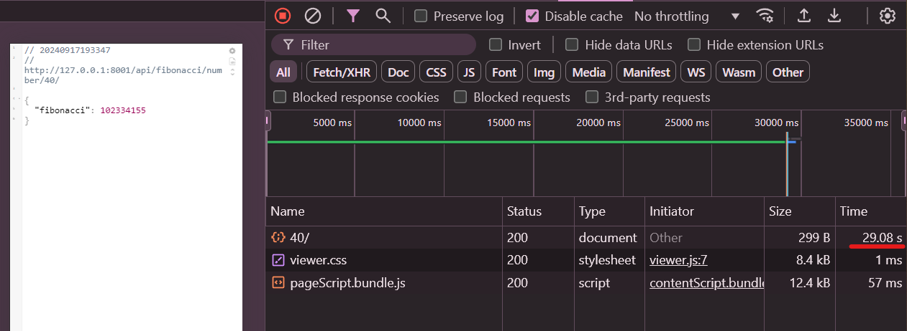
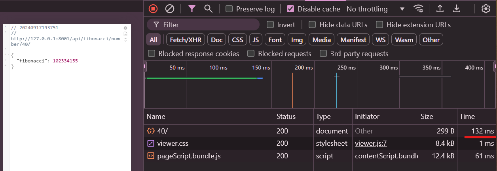
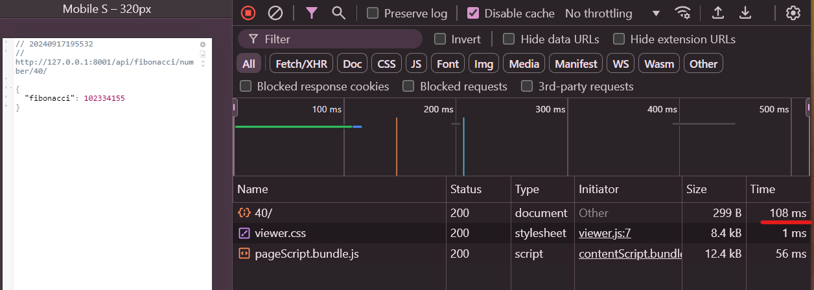

🚀 Supercharge Your Django REST APIs with Redis: Boost Performance Like a Pro! 🔥¶
⏱ Estimated Reading Time: about 11 minutes.
Page Index¶
1. Introduction¶
Imagine boosting the performance of your Django app’s REST APIs to lightning speeds 🚀. That’s exactly what Redis can do! By caching the results of resource-heavy computations and database queries, Redis lets you serve data almost instantly. No more waiting around for repeated API calls to crunch the same numbers—Redis has your back.
When your application is under pressure from high traffic or complex operations, Redis steps in like a performance superhero, storing frequently used data in memory. This reduces the load on your database or server and ensures users get blazing-fast responses, even during peak times. Whether you’re optimizing user sessions, caching API results, or speeding up analytics, Redis is your go-to solution for a snappy, scalable application.
2. What is Redis?¶
Google says (Lmao): “Redis is a source-available, in-memory storage, used as a distributed, in-memory key–value database, cache, and message broker, with optional durability.” Sounds fancy, right? But what does that actually mean?
Simply put, Redis is a super-fast place to store and access data instantly, without waiting for a traditional database to respond. Think of it like a magic notebook where you can jot down important things (like cache or session data), and when you need them, boom—they’re right there, in a blink!
3. Why Redis?¶
Because it’s incredibly easy to install and takes minimal code to integrate with Python and Django. Just a few commands, a couple of lines in settings.py, and you’re set.
It’s not just fast, it’s simple—and adding Redis to your tech stack is a powerful skill that sets you apart. Whether you’re caching API responses or managing sessions, Redis makes your life easier without the complexity.
4. Redis Installation¶
For full details, always refer to the official Redis installation guide: Redis Installation Guide.
Install Redis on Ubuntu/Debian
For this guide, we’ll be using Ubuntu, but keep in mind that Redis installation can vary depending on your platform. If you prefer a more consistent setup across different environments, running Redis through Docker is a great option, ensuring uniformity regardless of the operating system.
Now, let’s get Redis up and running!
Steps:
Add Redis Repository:
sudo apt-get install lsb-release curl gpg curl -fsSL https://packages.redis.io/gpg | sudo gpg --dearmor -o /usr/share/keyrings/redis-archive-keyring.gpg sudo chmod 644 /usr/share/keyrings/redis-archive-keyring.gpg echo "deb [signed-by=/usr/share/keyrings/redis-archive-keyring.gpg] https://packages.redis.io/deb $(lsb_release -cs) main" | sudo tee /etc/apt/sources.list.d/redis.list
Update package lists:
sudo apt-get update
Install Redis:
sudo apt-get install redis
Ensure Redis starts at boot and is running:
Redis starts automatically upon installation, but to check and enable it on boot:
sudo systemctl enable redis-server sudo systemctl start redis-server
Verify Redis is running:
Test the connection with redis-cli and ping:
redis-cli 127.0.0.1:6379> ping PONG
Redis is now set up and ready to use. It will restart automatically at boot and can be tested immediately with redis-cli.
5. Redis Implementation on Existing Django REST API¶
Integrating Redis with your Django REST API is straightforward and can significantly improve performance by caching expensive computations or frequently requested data.
1. Install `django-redis`
First, install the django-redis package:
pip install django-redis
2. Update `settings.py`
Now, update your settings.py to configure Redis as your cache backend:
# settings.py
CACHES = {
'default': {
'BACKEND': 'django_redis.cache.RedisCache',
'LOCATION': 'redis://127.0.0.1:6379/1',
'OPTIONS': {
'CLIENT_CLASS': 'django_redis.client.DefaultClient',
}
}
}
This tells Django to use Redis as the cache backend, connecting to the Redis server running locally.
🚨 Important: Redis Service Must Be Running 🚨
Before running your Django app, ensure that the Redis service is running, otherwise you’ll encounter a connection error.
Start Redis using the following command:
sudo systemctl start redis
Check if Redis is running:
sudo systemctl status redis
If Redis is not running, you’ll encounter an error like this:
ConnectionError: Error 111 connecting to 127.0.0.1:6379. Connection refused.
🚨 Make sure Redis is running to avoid this issue! 🚨
A Simple Fibonacci View
Here is a simple view that returns the nth Fibonacci number:
from django.http import JsonResponse
from .utils import fibonacci
def get_fibonacci(request, n):
fib_number = fibonacci(int(n))
return JsonResponse({"fibonacci": fib_number})
Utility Function
And here’s the utility function, implemented with a recursive approach:
def fibonacci(n):
if n < 2:
return n
else:
return fibonacci(n - 1) + fibonacci(n - 2)
🚀 Ready to Test! 🚀
Run your Django app, and access the Fibonacci API at:
Note: I am running it on a different port using.
python manage.py runserver 8001
Now, let’s test our endpoint with a fairly large Fibonacci number.
http://127.0.0.1:8001/api/fibonacci/number/40/
As we can see, the server took approximately 29.17 seconds to respond.
This delay will occur every time we call the endpoint with the same input, making our app feel sluggish and unresponsive.
Now, let’s implement Redis to cache the result and drastically improve response times!
Updated Fibonacci View with Redis Caching
from django.http import JsonResponse
from django.core.cache import cache
from .utils import fibonacci
def get_fibonacci(request, n):
cache_key = f"fibonacci_{n}"
fib_number = cache.get(cache_key)
if fib_number is None:
# Compute the Fibonacci number if not in cache
fib_number = fibonacci(int(n))
# Store it in Redis cache for 1 day (86400 seconds)
cache.set(cache_key, fib_number, timeout=86400)
return JsonResponse({"fibonacci": fib_number})
Explanation
In the updated code:
`cache.get(cache_key)`: We first check if the Fibonacci result for the requested number (n) already exists in Redis. If it does, the value is retrieved from the cache and returned immediately, skipping the need to recompute it.
`fibonacci()`: If the value is not in the cache (i.e., fib_number is None), the Fibonacci number is calculated using the recursive fibonacci function.
`cache.set(cache_key, fib_number, timeout=86400)`: Once computed, the result is stored in Redis with a cache key (e.g., fibonacci_40 for n=40). The timeout is set to 86400 seconds (1 day), meaning the cached value will expire after one day, and a new computation will happen if requested again after expiration.
How the Cache Works
Getting from Cache: The cache.get() method checks if a value already exists in Redis. If it does, that value is returned instantly, making the application much faster.
Setting to Cache: When we compute a new value, we store it using cache.set(), along with a timeout (expiration) period. After this timeout, the cache will no longer have that value, and the value will need to be recomputed.
This method avoids redundant computations and drastically reduces response times for repeated requests.
Now let’s check how much we’ve improved our response times!
Excellent, we saved a whole 0.09 seconds! But wait — that’s not much of an improvement, right? Did we do anything wrong? Actually, no! This is expected behavior. This was the first time the Fibonacci number was computed, meaning it had not been cached in Redis until now. Everything is working as intended. The real improvement happens when we run the same request again!
🤯🤯🤯 It now only took 132 ms! That’s an over 220x improvement in response time compared to the initial run! Here’s the breakdown:
First run: 29.17 seconds (not cached, computed from scratch)
Second run: 0.132 seconds (cached, pulled from Redis)
Why This Is a Huge Benefit
Once the Fibonacci number has been computed and saved in Redis, any subsequent request for the same number will be retrieved directly from the cache. This means:
Faster Response for All Users: If 100 users request the Fibonacci number for 40, Redis will serve the cached result instantly, as long as the cache hasn’t expired.
Reduced Server Load: Since Redis stores the result, the server doesn’t need to compute the same value repeatedly, which frees up resources and drastically reduces the time it takes to serve repeated requests.
Scalability: With Redis caching, your API can handle many more requests efficiently, especially for expensive computations like the Fibonacci sequence.
Real-World Usage and Cost Savings
Many large companies such as Amazon, Netflix, and Facebook take full advantage of caching mechanisms like Redis. By caching frequently accessed data, these companies reduce the load on their servers, decrease response times, and improve user experience. More importantly, caching helps them save costs by minimizing the need for expensive computations or database queries, ultimately reducing server infrastructure costs.
This caching approach not only boosts performance but also enhances the overall user experience, making your application more responsive and scalable!
6. Not for Every Use Case¶
While Redis is great for caching and improving response times, it shouldn’t be the first solution we turn to when experiencing slowdowns. As we saw earlier, the first computation of the Fibonacci number still took a significant amount of time. Instead of immediately relying on Redis, it’s important to first evaluate our code and identify what’s causing the bottleneck.
In this case, what’s hindering performance?
The Fibonacci function in our code uses a naive, recursive approach, which becomes extremely inefficient for larger numbers. Recursive algorithms, especially ones with exponential complexity like this, lead to slow performance as they make redundant calculations for the same inputs.
Solution: Use an Iterative Approach
An iterative approach is far more efficient for computing Fibonacci numbers because it avoids the repeated calculations and stack overhead that recursion creates. Here’s the optimized code:
def fibonacci(n):
a, b = 0, 1
for _ in range(n):
a, b = b, a + b
return a
This iterative method computes the Fibonacci number in linear time (O(n)) and doesn’t suffer from the limitations of recursion. By optimizing the Fibonacci function itself, we can drastically improve performance before even considering caching solutions like Redis.
When to Use Redis
When further code optimizations are hard to find or implement, Redis can be used to improve performance, especially when handling frequent requests for the same data. Caching becomes an invaluable tool in such cases to significantly boost responsiveness.
Now let’s see our results (on the first run!) with our new, more efficient code.

What?! 🤯🤯🤯 219 ms??!?! Yes! Almost as fast as with Redis. This highlights the importance of addressing the actual problem first, rather than using Redis as a quick fix or “band-aid” solution. Redis is powerful, but it should be used to complement performant code, not cover up inefficiencies.
Now let’s look at the time with both the new code and Redis in action.
Notice it drops to 108 ms, which is still an improvement. This time, the result is being pulled from Redis rather than computed again, demonstrating the benefit of caching once the computation has already been performed.
7. Conclusion¶
Redis is an amazing tool that you should definitely try if you haven’t already! It offers a wide range of use cases and can drastically improve the performance of your application when used effectively. When combined with well-optimized and efficient code, Redis becomes a powerful ally, helping to scale and speed up your app like never before. So go ahead, dive into Redis, and unlock the full potential of your application!
8. Additional Resources¶
For further reading and exploration, check out these helpful resources:
Django-Redis Repository: Learn more about Redis with Django and the package that makes it possible.
PyPI Page for `django-redis`: The official package page on PyPI.
Django Caching Documentation: Explore the caching framework provided by Django.
Redis Documentation: The official Redis documentation for deeper understanding.
9. Final Thoughts & Thank You!¶
Thank you so much for taking the time to read this guide! 🎉 I hope you found it helpful and inspiring as you explore the incredible power of Redis and its integration with Django.
Good luck with your projects. 🚀 Happy coding!